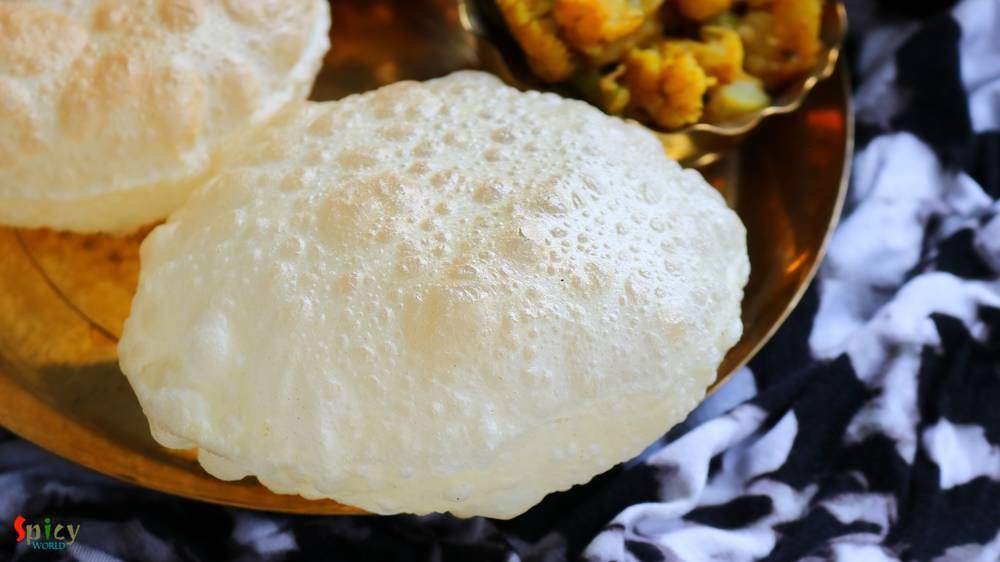

Simple and Easy Recipes
Luchi / Bengali style Puri (Puffed Bread)
© 2016 Spicy World, Published on: May 9, 2016
Every family has their own breakfast story. In Bengali households, 'luchi' is the common one. Sunday mornings are meant for 'luchi - torkari'. I was never a breakfast loving person, still not. Actually for me the toughest thing is time management in the morning, always hullabaloo ! But my husband is a huge fan of 'luchi' or 'kochuri', so I have to make it once or twice in a week. I have already shared many types of 'kachori' recipe with you and now is the time for some Bengali style Poori. You can pair this with any veg / non veg curry and sweets, every time 'luchi' tastes delicious. Try this in your kitchen and enjoy a perfect breakfast on any Sunday morning.
")
Ingredients
- 2 cups of all purpose flour.
- A big pinch of salt.
- 2 Tablespoons of white oil.
- Water as required.
- Some dry flour.
- Lots oil for frying.
")
")
Steps
Put the flour, salt and 1.5 Tablespoons of oil in a mixing bowl.
Mix the flour and oil very well with your hand. It's very important to mix them first.
Now add little by little water and start mixing the flour.
Never add water at a time. Always go for little by little.
Make a semi soft dough.
Knead the dough well for 3 minutes and make it smooth.
Keep the dough covered for 20 minutes.
Then make small lemon size balls out of the dough.
If you are a beginner, then make very small balls. It will be easy for you to roll and fry.
Roll a ball in dry flour and flatten it with rolling pin to 3 - 4 inches.
You can also apply oil instead of dry flour before flattening.
Fry them in hot oil. Make sure the oil is very hot, otherwise your poori will not get puffed.
Do not fry them too much, they will become red in color.
Your luchi is ready ...
Enjoy them hot with any curry and some sweets ...
 (Final)")